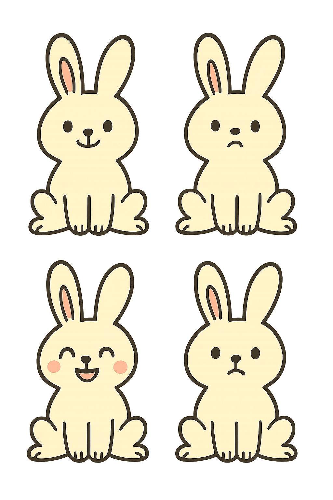

<button style="background-color: blueviolet;">click me</button>
<audio src="./twinsizedmattress.mp3"></audio>
<div id="bunny-frame" style="width: 64px; height: 64px; overflow: hidden; display: inline-block;">
    
</div>

<script>
    var audio = document.querySelector('audio');
    var played = false;
    var count = 0

    function playAudioOnce() {
        console.log('Mouse moved', count);
        count = count + 1;
        if (!played) {
            audio.play()
            played = true
        }
    }

    window.addEventListener('mousemove', playAudioOnce);

    var button = document.querySelector('button');
    button.addEventListener('click', function() {
        audio.pause();
    });
</script>